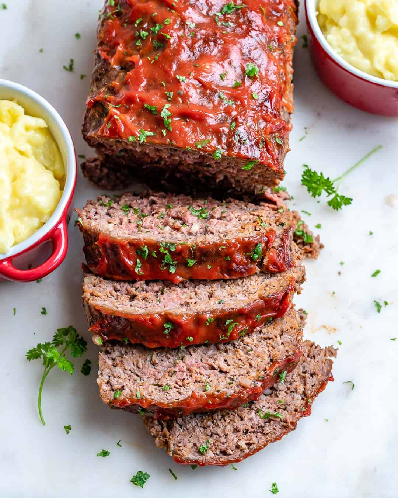

Easy Homemade Meatloaf

Homemade Meatloaf recipe
Tender and juicy, this meatloaf is full of
flavor and easy to make.
Ingredients:
- 2 lbs 90-92% Lean Ground Beef
- 1 Medium White or Yellow Onion
- 2 Large Eggs
- 2 Garlic Cloves minced
- 3 Tbsp Sugar-free ketchup
- 3 Tbsp Chopped Fresh Parsley
- ¾ Cup Panko Breadcrumbs
- ⅓ Cup Milk
- 1½ Tsp Kosher Salt
- 1½ Tsp Italian Seasoning or Dried Oregano
- ¼ Tsp Fresh Ground Black Pepper"
- ½ Tsp Smoked Paprika
For The Glaze:
- ¾ Cup Sugar-free ketchup
- 1 Tbsp Dijon Mustard
- 1 Tbsp Raw Honey
- 1 Tsp Garlic Powder
- ½ Tsp Onion Powder
- 1 Tsp White Wine Vinegar
- ¼ Tsp Fresh Ground Black Pepper
- ¼ Tsp Salt
To Garnish:
- 1 Tbsp Freshly Chopped Parsley
Directions
- Preheat the oven to 375° F and line a
9×5-inch loaf pan with parchment paper,
leaving about an inch of overhang on both
sides. This will help to easily remove the
meatloaf from the pan.
- In a large mixing bowl, use clean hands to
combine the ingredients for the meatloaf.
Mix until well combined.
- Transfer the meat mixture to the prepared
loaf pan, pressing to shape it to the inside
of the pan making sure there are any air pockets
left.
- Bake the meatloaf in the preheated oven for 40-50
minutes.
- While the meatloaf is baking, prepare the glaze.
In a small bowl, combine the ingredients for the
glaze, and stir to combine. Pour the glaze over the
top of the meatloaf, and spread to evenly distribute
it.
- Return the meatloaf to the oven and bake for an
additional 15-20 minutes, or until the glaze is
caramelized but not burnt. Rest for 10 minutes,
then use the overhanging parchment paper to remove
the meatloaf from the pan.
- Slice the meatloaf, and garnish with freshly chopped
parsley. Enjoy!